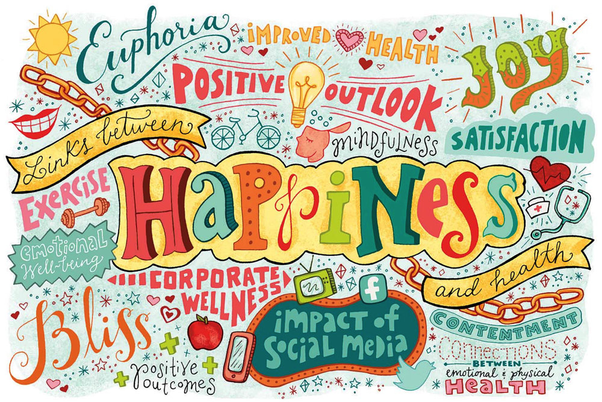
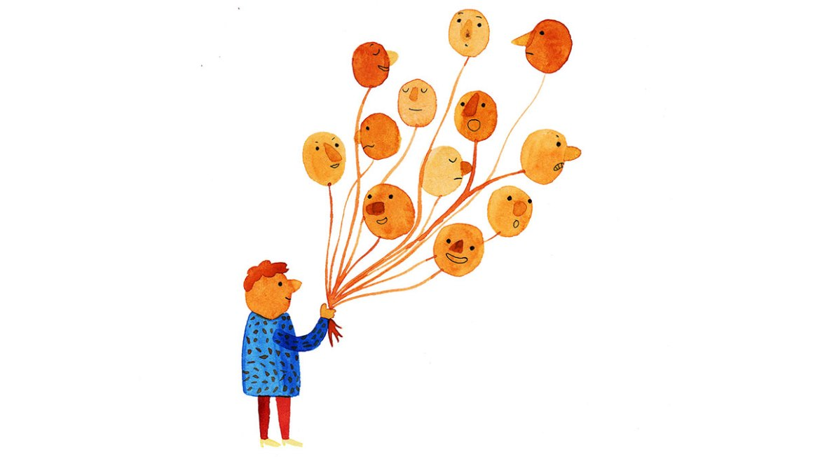
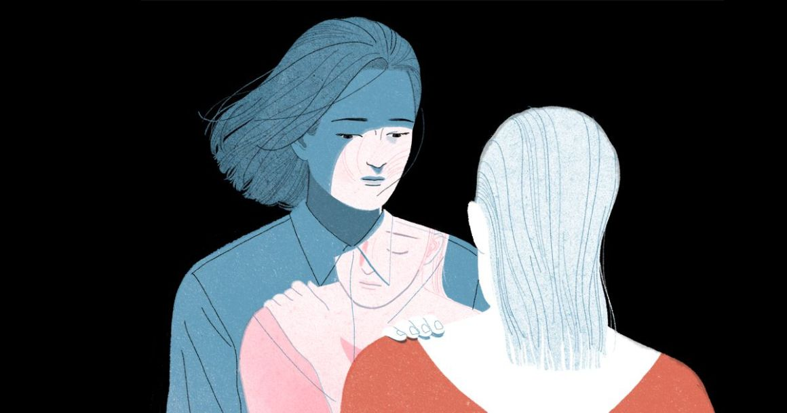

Blog mới nhất của bạn |

Hạnh phúc là gì?
Hạnh phúc là một trạng thái cảm xúc được định hình bởi cảm giác vui vẻ, hài lòng, thỏa mãn, và trọn vẹn. Mặc dù hạnh phúc có nhiều định nghĩa nhưng thường được mô tả là những cảm xúc tích cực và thái độ hài lòng với cuộc sống.

Sự phát triển não bộ của thanh thiếu niên
Não bộ phát triển cực kỳ nhanh trong 3-5 năm đầu đời, và mọi cấu trúc và khu vực đều thành hình vào năm 9 tuổi. Các trung khu khác nhau trong não bộ phát triển và kết nối hoàn chỉnh dần dần theo thời gian. Vùng cuối cùng trưởng thành là thùy trước trán. Quá trình này diễn ra trong những năm tháng thanh thiếu niên.


Làm thế nào để đối phó với cảm xúc tiêu cực?
Một vấn đề quen thuộc với nhiều người: Làm sao để đối phó với những cảm xúc tiêu cực cứ mãi len lỏi khi ta bị căng thẳng hoặc tổn thương? Liệu ta có nên kìm nén cơn giận, sự bực dọc và cứ vờ như nó không tồn tại, hay ta có thể tìm cách hạn chế tác động tiêu cực từ những cảm xúc này?

Tổng quan về Trị liệu bằng thú cưng (Pet Therapy)
Trị liệu bằng thú cưng là một loại hình tương tác có hướng dẫn rõ ràng giữa một người và một loài động vật đã được huấn luyện. Hình thức này có khi còn có sự góp mặt của người điều khiển con vật đó. Mục đích của trị liệu bằng thú cưng là giúp một ai đó hồi phục hoặc đối phó được với một vấn đề sức khỏe hay rối loạn tâm thần nào đó.

5 Học thuyết tâm lý về tình yêu
Tại sao nhân loại lại có tình yêu? Tại sao có một số dạng tình yêu bền lâu và có loại lại chỉ thoáng qua? Các nhà nghiên cứu và các nhà tâm lý học đã đặt ra một số học thuyết khác nhau về tình yêu để giải thích sự hình thành và kéo dài của phạm trù này.
